In this tutorial, I'll show you how to run OneShot on Windows XP
Note: The copy of OneShot I used had it's steam_api.dll file patched so it does not require Steam to run. You may also need to patch your copy.Firstly, you need to patch the main executeable file of the game, because if you try to run it normally, you will just get a "is not a valid Win32 application error
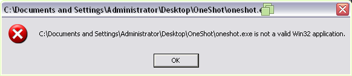After installing it, reboot your computer
Now, go to the oneshot.exe file, right click on it and select "Patch and run Vista executeable..."
After the patching is done, you should get a error saying that vcruntime140.dll is missing.
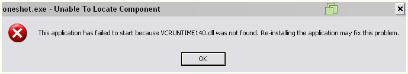If done correctly, you should get a "Failed to initialize Steamworks API" error. This is normal, and in fact a good sign as this means that oneshot.exe is now working
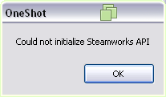To get steamshim.exe (the file that allows you to run OneShot) working, you firstly need to patch it in the same way as you did with oneshot.exe
After patching, you will get an error saying that the entry point inet_ntop is missing in WS2_32.dll
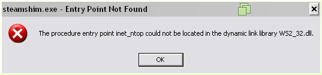If done correctly, you will get an error saying that ws2_base.dll is missing.
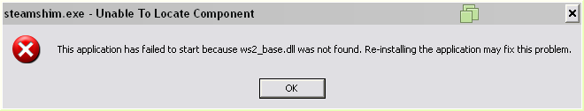After placing the two missing .dll files OneShot should run!
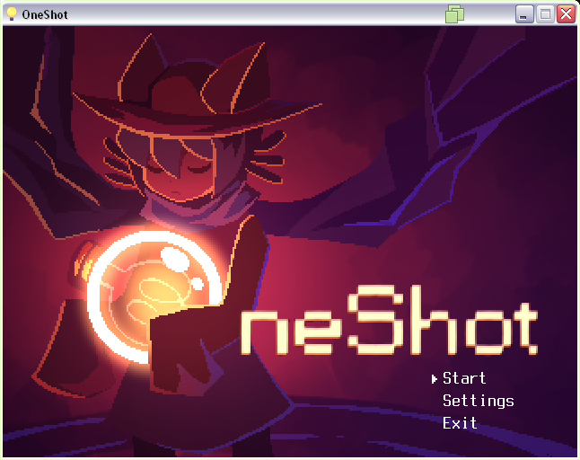Note: you may get a Windows Firewall alert, you can safely press Keep Blocking
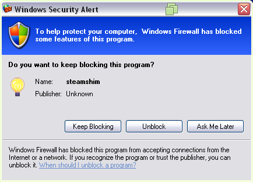Now, to get the final file working, it may not seem important but it needs to work for the game to let you complete the last puzzle (also for one other thing at the end but I will not spoil)
Then, copy _______.exe to the same place as UPX
Now, you need to open a command prompt window and navigate to the same directory as UPX and _______.exe
Then, type upx -d _______.exe as shown in the image below
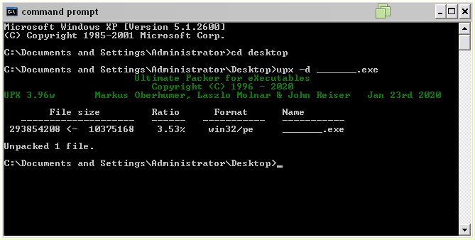Install HxD and open the _______.exe file in it.
Now, go to Search > Find in HxD and search for shell32
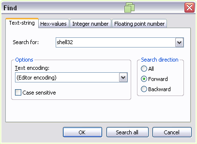It will find an occurence of shell32, replace the 32 with XP (do not erase any characters, type over them instead
If done correctly, it should look like this:
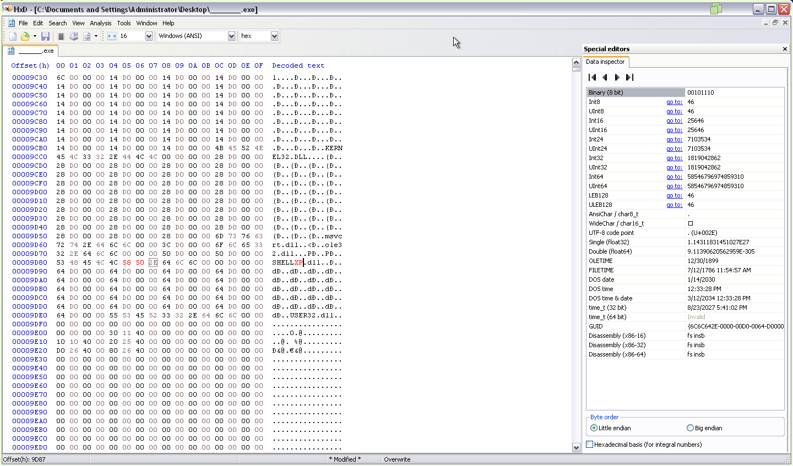Now, save the file.
After this, put the shellxp.dll you downloaded and the modified _______.exe in the OneShot directory. Overwrite any files if asked.
If everything is done correctly, the _______.exe file will run.
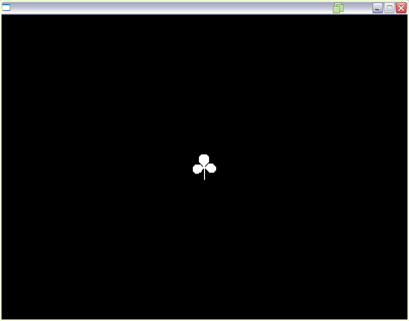